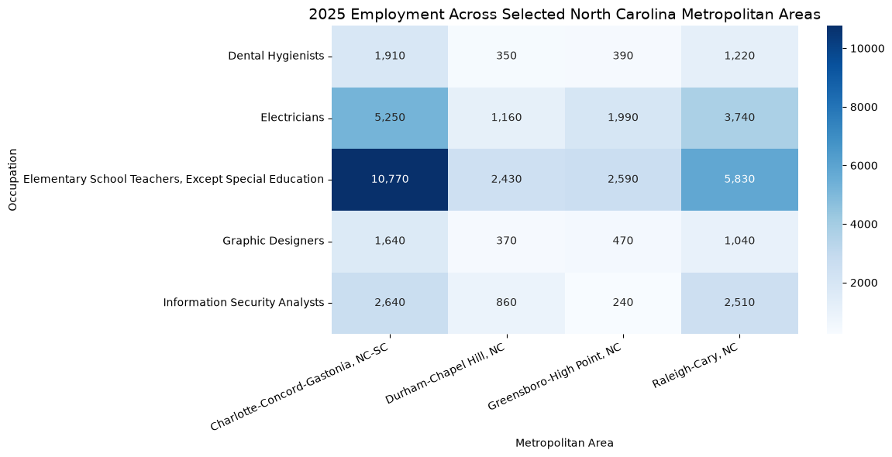
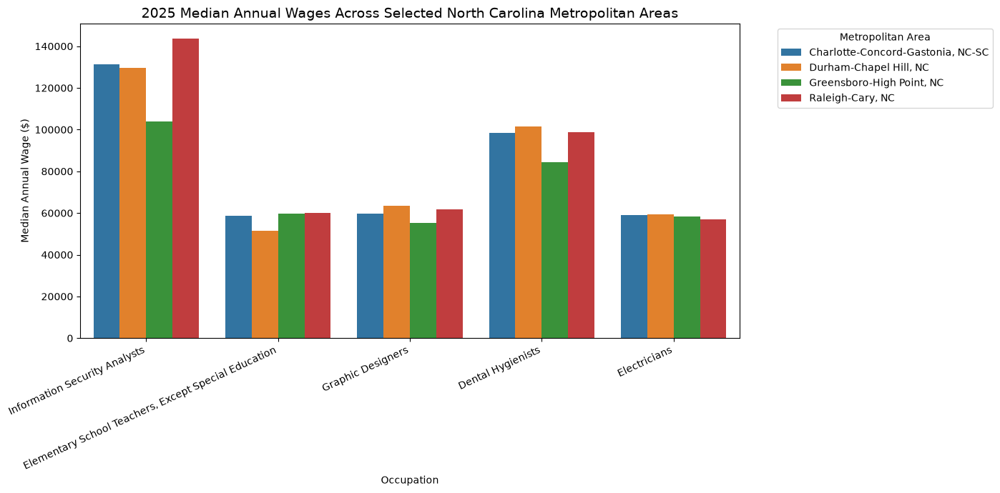
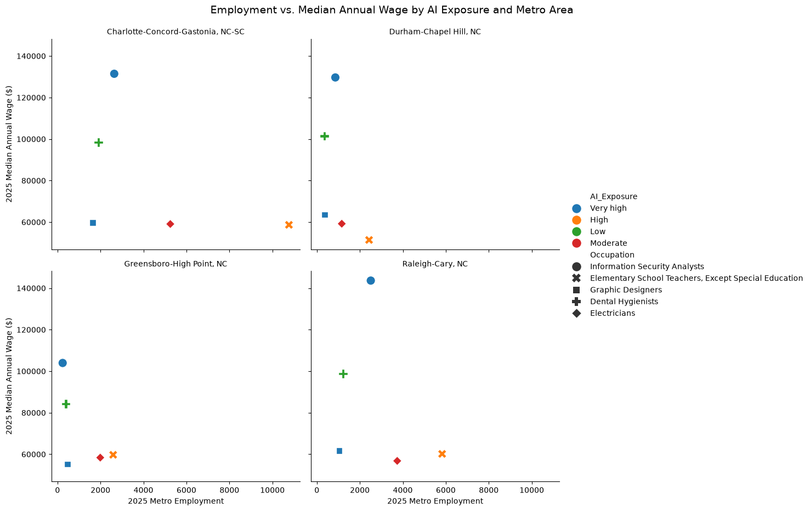
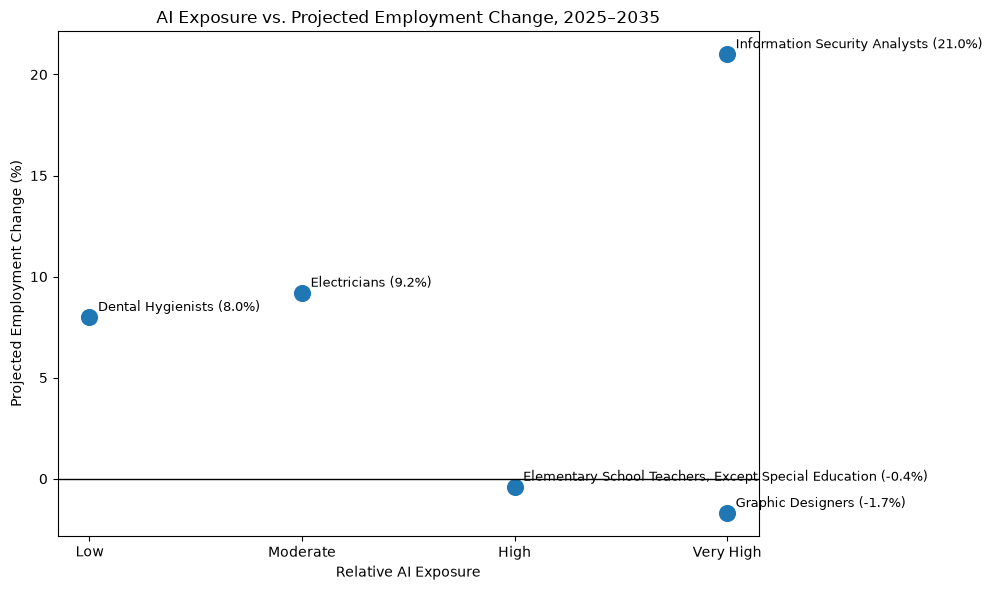

EXPLORATORY DATA ANALYSIS
AI Exposure & the North Carolina Labor Market
How do employment, wages, and projected employment growth vary across occupations with different levels of AI exposure in major North Carolina metropolitan labor markets?
01 — PROBLEM DEFINITION
Research Question
When most people think of AI adoption or exposure in the workplace they often associate it with job loss. As someone who has worked heavily in the tech field while having a friend group with occupations ranging from Teachers to Dentist to Graphic Designers, I am often asked, “Do you think AI can do my job?”. My answer is usually a resounding “NO!”. Of course, I have a slight bias as these are my friends and I believe they are all unique beings that add something nuance to their positions that AI never could. I wholeheartedly believed it could not happen until a close friend of mine working as a graphic designer was laid off and replaced by AI at my own company. If she could be replaced, could my other friends? This led me to my focus on this project.
This analysis examines five occupations ranging from low to very high relative AI exposure across four major North Carolina metropolitan areas using 2025 Bureau of Labor Statistics data.
The analysis compares current employment and median wages in Charlotte-Concord-Gastonia, Durham-Chapel Hill, Greensboro-High Point, and Raleigh-Cary. It then connects these current labor-market conditions with BLS relative AI exposure categories and national employment projections through 2035.
The goal of this project is not to necessarily equate AI exposure to job decline or growth but rather to examine whether my friends occupations with lower or greater AI exposure have a stronger or weaker outlook for future employment.
02 — DATA DESCRIPTION
Data Description
This analysis uses two datasets from the U.S. Bureau of Labor Statistics (BLS). The first comes from the 2025 Occupational Employment and Wage Statistics (OEWS) program and provides employment and wage estimates for metropolitan labor markets. The analysis focuses on four North Carolina metropolitan areas: Charlotte-Concord-Gastonia, Durham-Chapel Hill, Greensboro-High Point, and Raleigh-Cary.
Five occupations were selected to represent different levels and types of exposure to artificial intelligence:
Information Security Analysts
Graphic Designers
Elementary School Teachers, Except Special Education
Electricians
Dental Hygienists
The second dataset comes from the BLS Artificial Intelligence Exposure Categories and 2025–2035 Employment Projections. This dataset classifies occupations according to their relative exposure to AI and provides employment projections through 2035.
Unit of Analysis
The primary unit of analysis is an occupation within a North Carolina metropolitan area in 2025. With five occupations across four metropolitan areas, the final dataset contains: 20 occupation–metro observations.
The AI exposure and employment projection measures are occupation-level measures, so those values repeat across the four metropolitan observations for each occupation.
Operationalizing AI Exposure
In this project, I want to clarify that the AI exposure metric is not the amount of AI used. In actuality, it is BLS's measure of how exposed an occupation's work activities are to AI technologies.
My BLS data source combines theoretical and observed AI usage metrics to classify occupations into four relevant exposure categories. The data provides a clear picture that greater exposure does not automatically mean that an occupation will lose jobs. This is a vital distinction in my analysis: the project compares AI exposure with current labor-market conditions and projected employment change rather than assuming that exposure represents job displacement.
Key Variables
| Variable | Definition |
|---|---|
| Metro Area | North Carolina metropolitan labor market |
| Occupation | BLS Standard Occupational Classification occupation |
| Employment | Estimated number of workers employed in the occupation within the metro area in May 2025 |
| Median Annual Wage | Estimated median annual wage for the occupation within the metro area in May 2025 |
| Location Quotient | Concentration of an occupation in the local labor market relative to its national concentration |
| AI Exposure | BLS relative AI exposure classification: Low, Moderate, High, or Very High |
| National Employment 2025 | National employment for the occupation in 2025, reported by BLS in thousands |
| Projected Employment 2035 | Projected national employment for the occupation in 2035, reported in thousands |
| Projected Employment Change % | BLS projected percentage change in national employment from 2025 to 2035 |
Data Quality
The original OEWS datasets contained substantially more occupations, geographic areas, and variables than required for my analysis. The data was filtered to the five occupations and four metropolitan areas, producing a balanced dataset of 20 observations.
Numeric variables were converted to appropriate numeric data types, unnecessary columns were removed, and BLS column names were renamed to improve readability.
03 — DATA CLEANING AND PREPARATION
Data Cleaning and Preparation
The original BLS OEWS datasets contain occupational estimates for hundreds of occupations and geographic areas. I used pandas to reduce the data to the observations and variables relevant to my research question.
Geographic filtering
I filtered the metropolitan dataset to North Carolina and selected Charlotte-Concord-Gastonia, Durham-Chapel Hill, Greensboro-High Point, and Raleigh-Cary.
Occupation filtering
I used SOC occupation codes to select five occupations representing different levels of relative AI exposure. SOC codes were used instead of occupation names to provide a consistent identifier across BLS datasets.
Variable selection
I retained employment, median annual wage, and location quotient from the OEWS dataset and removed variables that were not needed for the analysis.
Data type conversion
Employment, median annual wage, and location quotient were converted to numeric fields so they could be used in calculations and visualizations.
Quality checks
I checked the filtered data for duplicate observations and missing values. The final sample contained no duplicates or missing employment or wage values.
Dataset integration
I joined the OEWS data with the BLS AI Exposure and Employment Projections dataset using the SOC occupation code. This added relative AI exposure and national employment projections for 2025–2035.
To reiterate, the dataset contains 20 observations, representing five occupations across four North Carolina metropolitan labor markets. Each occupation has a complete observation for every selected metro area.
One thing I would like to mention is during initial exploration, I decided to move away from looking at occupations that are most likely to be effected by AI and chose occupations with more variance to each other to give a more realistic view of the workforce as whole. I leaned toward my friends occupations as they gave greater diversity to my dataset and visuals. Also, one candidate occupation (computer programmers) contained a suppressed metropolitan wage estimate. Rather than disregarding or keeping missing values that BLS did not report on the analytical level I was looking at (it only had median and means on a state level), I selected an alternative occupation with complete observations across all four metropolitan areas. This preserved a balanced dataset and avoided introducing geographically inconsistent values into the analysis.
04 — VISUALIZATIONS & INSIGHTS
Visualizations & Insights
Employment Heat Map

Employment varies considerably across both occupation and metropolitan areas. Charlotte-Concord-Gastonia has the largest combined employment across the five selected occupations, while Raleigh-Cary has the second-largest concentration. Elementary School Teachers represent the largest occupation in each market, including approximately 10,770 workers in Charlotte and 5,830 in Raleigh-Cary.
The heat map also highlights differences within individual occupations. Information Security Analyst employment is substantially higher in Charlotte and Raleigh than in Greensboro-High Point, suggesting that current opportunities for highly AI-exposed occupations are not distributed evenly across North Carolina's major labor markets.
Median Annual Wage Grouped Bar Chart

Wage differences are more strongly associated with occupation than geography in this sample. Information Security Analysts have the highest median wages across all four metropolitan areas, reaching approximately $143,640 in Raleigh-Cary.
Dental Hygienists form the second-highest wage group, while Electricians, Graphic Designers, and Elementary School Teachers generally have median wages near $50,000–$64,000. Raleigh-Cary has the highest average median wage across the five selected occupations at approximately $84,222, compared with approximately $72,312 in Greensboro-High Point.
Employment vs. Wages Scatterplot

The relationship between employment size and wages is not uniform across occupations. Elementary School Teachers have the largest employment counts but comparatively moderate wages, while Information Security Analysts have much smaller employment levels and substantially higher wages.
The occupations form visually distinct groups based on their employment and wage characteristics. This suggests that labor-market conditions differ substantially by occupation even before considering AI exposure.
AI Exposure vs. Future Employment Scatterplot

The relationship between AI exposure and projected employment growth is not consistent across the five occupations. Employment growth is projected at 8.0% for Dental Hygienists with Low AI exposure and 9.2% for Electricians with Moderate exposure. Elementary School Teachers, classified as High exposure, are projected to remain relatively stable at −0.4%.
The most striking difference occurs among occupations with Very High AI exposure. Graphic Designers are projected to decline by 1.7%, while Information Security Analysts are projected to grow by 21.0% between 2025 and 2035.
This variation within the same AI exposure category suggests that AI exposure alone is not sufficient to explain an occupation's projected employment outlook. Other characteristics of the occupation and broader labor-market demand are also likely important.
05 — STORYTELLING & NARRATIVE
Storytelling & Narrative
Good news for my friends, the results suggest that AI exposure alone does not determine whether an occupation is likely to grow or decline. The five occupations in this analysis represent four levels of relative AI exposure, yet their current labor-market conditions and projected employment trends vary substantially.
The clearest example is the comparison between Information Security Analysts and Graphic Designers. Both are classified by BLS as having Very High AI exposure, but their projected outcomes are very different. Information Security Analysts have the highest average median wage in the selected North Carolina markets at approximately $127,178 and are projected to grow nationally by 21.0% between 2025 and 2035. Graphic Designers, despite having the same AI exposure classification, have an average median wage of approximately $60,083 and projected employment change of −1.7%.
The pattern is not straightforward at lower exposure levels either. Dental Hygienists, classified as Low AI exposure, are projected to grow by 8.0%, while Electricians, with Moderate exposure, are projected to grow by 9.2%. Elementary School Teachers have High exposure but a relatively stable projected outlook of −0.4%.
Geography also matters. Among the five occupations studied, Charlotte-Concord-Gastonia has the largest combined employment, while Raleigh-Cary has the highest average median wage and the greatest average occupational concentration. This suggests that workers in the same occupation may encounter different labor-market conditions depending on where they work within North Carolina.
06 — CONCLUSION
Conclusion
After looking at the data, I have something very important to communicate to my friends. “I don’t know if your jobs are safe but AI exposure may not play as big of a role as we may have thought.”
The analysis does not support a simple conclusion that greater AI exposure means fewer future jobs. Instead, occupations with identical or similar exposure levels can have very different wages, employment concentrations, and projected growth.
AI exposure appears to be one piece of a much larger labor-market picture. The results suggest that the type of work being performed, demand for the occupation, geographic labor-market conditions, and other economic factors remain important when considering how occupations may evolve alongside AI.
What We Cannot Conclude
In this research I have found that, this analysis does not establish that AI causes employment growth or decline. The BLS AI exposure categories measure the relative potential for AI to interact with occupational tasks, while the 2025–2035 employment projections incorporate many economic and labor-market factors. Therefore, differences in projected employment should not be interpreted as the direct effect of AI.
07 — LIMITATIONS, ETHICS & REFLECTION
Limitations, Ethics & Reflection
Limitations
This analysis provides a snapshot of selected North Carolina labor markets, but several limitations should be considered when interpreting the results.
First, the analysis includes only five occupations and four metropolitan areas. The occupations were intentionally selected to represent different levels of AI exposure and different types of work from my friends jobs, rather than to represent the entire North Carolina workforce. The findings therefore should not be generalized to all occupations or geographic areas in the state.
Second, the geographic and projection data operate at different levels. Current employment and wage estimates are specific to the four selected North Carolina metropolitan areas, while the 2025–2035 employment projections are national. The projected growth rates therefore describe the expected national outlook for each occupation and should not be interpreted as forecasts specifically for Charlotte, Raleigh, Durham, or Greensboro.
Most importantly, AI exposure is not the same as AI adoption or job displacement. The BLS exposure categories describe the relative potential for AI to interact with tasks performed within an occupation. They do not indicate how frequently workers currently use AI or the probability that workers will be replaced by AI.
Ethics
AI and employment are topics that can easily be presented in ways that create unnecessary fear or misleading conclusions. For this reason, I avoided interpreting high AI exposure as evidence that an occupation is disappearing. As I stated previously the only honest answer I can give me friends is “I don’t know”.
The results themselves demonstrate why this distinction matters. Information Security Analysts and Graphic Designers are both classified as having Very High AI exposure, yet BLS projects substantially different employment trajectories for the two occupations. Presenting AI exposure as equivalent to job-loss risk would therefore misrepresent both the exposure measure and the employment projections.
I also avoided filling suppressed or unavailable BLS estimates with invented values during data preparation. Occupations were selected based partly on the availability of complete observations across the four metropolitan areas so that comparisons could be made using reported data.
Reflection
One of the most interesting findings from this project was that the relationship between AI and employment appears more complicated than the common assumption that greater AI exposure automatically means fewer jobs.
What really surprised me about this project is the fact that it did not give me a clear answer on the exposure of AI and how its relates to employment and wages. Many factors attribute to the gain and loss of North Carolina’s job market. Most people make the assumption that AI exposure means they can be replaced but the future is not set in stone just yet.
Information Security Analysts provide the strongest example. Despite having Very High relative AI exposure, the occupation has the highest average median wage among the occupations I analyzed and is projected to grow nationally by approximately 21% through 2035. At the same time, Graphic Designers share the same AI exposure category but have a slightly negative projected employment outlook.
This suggests that AI may affect occupations differently depending on the nature of the work, labor demand, required skills, and other economic factors. The effect of AI seems to be on a case by case basis.
In the second part of this project, I have considered expanding the analysis to more occupations and North Carolina labor markets and examine changes across multiple years. I would also like to incorporate measures of actual workplace AI adoption, which would allow me to distinguish between occupations that are theoretically exposed to AI and occupations where AI tools are already being widely used.
08 — CODE & TRANSPARENCY
Code & Transparency
All Python code used to collect, clean, merge, analyze, and visualize the data for this project is available through the project's GitHub repository/Jupyter Notebook.
The analysis was completed using Python, with:
- pandas for data cleaning, filtering, merging, and descriptive analysis
- requests for programmatic retrieval of BLS data
- matplotlib and seaborn for visualization
- zip file and io for processing BLS files directly in Python
The original data were obtained from the U.S. Bureau of Labor Statistics (BLS) Occupational Employment and Wage Statistics and Employment Projections programs.
AI Usage Disclosure
Generative AI Disclosure: I used OpenAI ChatGPT (GPT-5.6 Sol)as a support tool during this project. I used it to help brainstorm and refine the research question, troubleshoot Python errors, explain code, assist with website development, and improve the clarity and organization of written interpretations. I independently selected the research topic, evaluated the data sources, made decisions regarding occupation and geographic selection, created, executed and reviewed the Python code, evaluated the resulting visualizations, and determined the final analytical conclusions. All statistical results presented in this project are based on data retrieved from the U.S. Bureau of Labor Statistics.
09 — SOURCES
Data Sources
U.S. Bureau of Labor Statistics. (2026). Occupational Employment and Wage Statistics: May 2025. https://www.bls.gov/oes/tables.htm
U.S. Bureau of Labor Statistics. (2026). Artificial intelligence (AI) exposure categories. https://www.bls.gov/emp/publications/ai-exposure-categories.htm
Peer-Reviewed Sources
Felten, E., Raj, M., & Seamans, R. (2021). Occupational, industry, and geographic exposure to artificial intelligence: A novel dataset and its potential uses. Strategic Management Journal, 42(12), 2195–2217. https://doi.org/10.1002/smj.3286
Frank, M. R., Ahn, Y.-Y., & Moro, E. (2025). AI exposure predicts unemployment risk: A new approach to technology-driven job loss. PNAS Nexus, 4(4), pgaf107. https://doi.org/10.1093/pnasnexus/pgaf107
Jetha, A., Crouch, M., Vold, K., Peters, S. E., Vietas, J., Sriharan, A., & Irvin, E. (2025). Artificial intelligence in the workplace: A living systematic review protocol on worker safety, health, and well-being implications. Systematic Reviews, 14, 255. https://doi.org/10.1186/s13643-025-03000-0